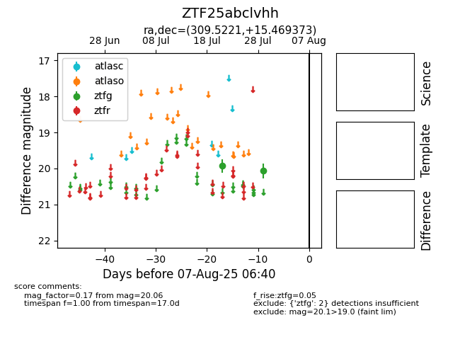

Target ZTF25abclvhh at 2025-08-07 07:30, see:
FINK: fink-portal.org/ZTF25abclvhh
Lasair: lasair-ztf.lsst.ac.uk/objects/ZTF25abclvhh
ALeRCE: alerce.online/object/ZTF25abclvhh
alt names
ZTF25abclvhh (ztf,fink)
coordinates:
equatorial (ra, dec) = (309.5221,+15.46937)
galactic (l, b) = (59.7063,-15.26481)
photometry
last ztfg=20.06
2 ztfg detections
